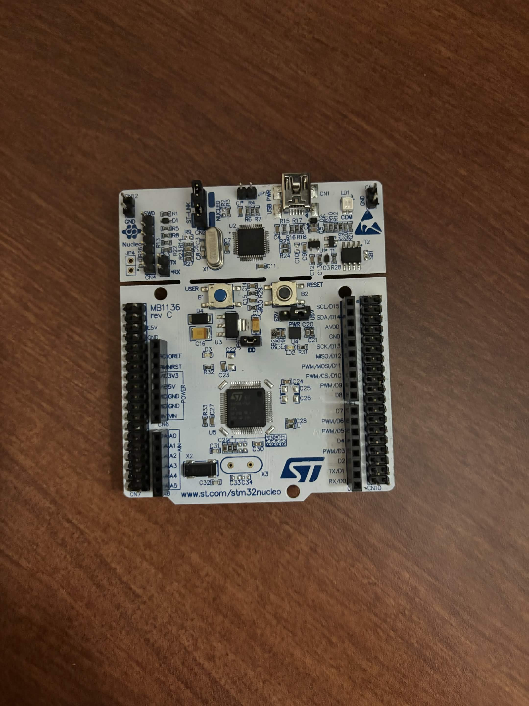
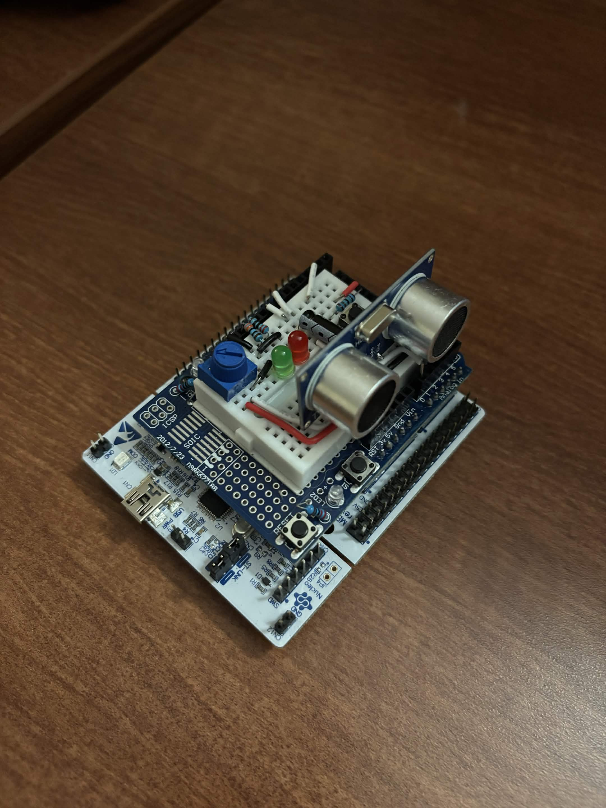
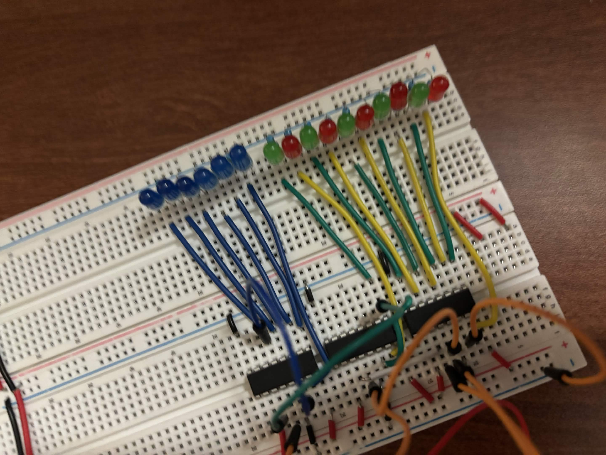

created a custom framework for using a nucelo l476rg development board as a general purpose single board computer.
used framework in the implementation of several projects, including an ultrasonic ranging tool for marking distances, and use it in countless other projects as a test board and prototyping module.
programming is one of my all time favorite things to do, and I have a special place in my heart for ( almost ) all different types and languages, but embedded c will always be my favorite to write.


